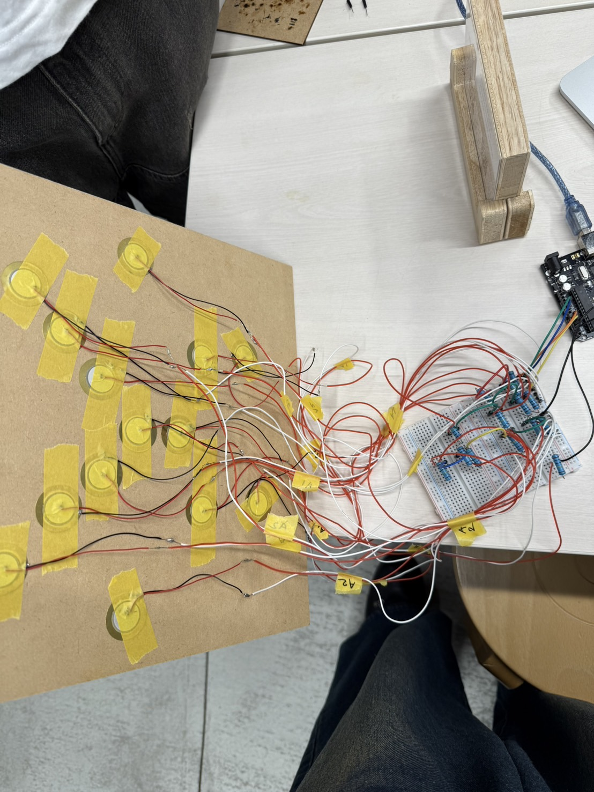

エアガンダーツ
一周目
自分たちのグループでは、ダーツをエアガンでやることにしました。
◾️ どのような作品にするのか考える。
● ダーツの的に、エアガンで球を打って、得点を競う。
センサは、圧力感知センサなどを使う。
→ 的のプロトタイプを作る。現段階でわかってる材料を買う。
プロトタイプ

材料

作品の全貌
自分たちの班は、ダーツのような遊びを、エアガンを用いてプレイする機会を作ることにしました。
エアガンで撃たれた球が、的に当たった時の衝撃を、感圧センサーで感知して、点数を割り出し、
その点数をスマホにIoTで表示するという内容です。
▪️ 最終的なプログラムのソースコードを考える
IoTをどこでどのように使うか考える
● センサーについてもっと理解する
センサーがどの範囲まで感知できるかテストする
→ センサーとArduinoを繋いだ
実際に繋いだ写真

◾️ 全部で12個のセンサーを繋げるため、その繋げ方を考える
ブレッドボードに線を刺しやすい方法を考える
● センサーがかなり強い力を加えないと動作しないため他のセンサーを探す
的の土台を考える
→ とりあえず、センサーが衝撃を感知して得点を出すソースコードは完成した。
センサーの振動がより正確に伝わるように、スポンジをいアタとセンサーの間に入れるなど、
センサーを変える以外の改善の余地も見られる。
◾️ ブレッドボードの規格が足りない問題を解決する方法を考える。
短いコードをどうやって延長するか考える。
● 的の設計をfusionで作る。
12個のセンサーをどう配置するか試しながら模索する。
→ 的の設計が完成。
→ 新しいセンサーを買った
ブレッドボードを購入。
土台の設計図
設計図
新しく買ったセンサー
→ ジャンパー線を半田付けし、センサーとArduinoまでの長さを伸ばした。
半田付け
実際の配線
→ 実際に買ったブレッドボードとセンサー、抵抗を使用してArduinoを繋いで反応するか試した。

進路変更
これまでエアガンでダーツをする機械を目指して作ってきたわけだが、ここにきて
一つの的に得点別のセンサーを貼ってその範囲を限定するという１番の壁にぶつか
ってしまった。一つの的に複数センサーを取り付け、感知した力が大きいセンサー
の特典が表示するようにしようとしていたのだが、同時に他のセンサーも反応して、
どうしても正確に得点を配点することができなかった。そこで、エアガンで的を打
つという本質は残し、一つの的を使うダーツから離れることにした。最終的に複数
の的を作り、個々に点数を配置してそれを設定した時間内に撃ち、そのトータルス
コアを表示するというものに方向転換した。
◾️ 的のデザインを考える。
● 配線を収納する箱を組み立てる。
→ 的のデザインを考えた
的のデザイン
◾️ 動画の構成を考える。
● 的を印刷する。
→ 配線を収納する箱を組み立てた
配線ケース

● 全て組み立ててみる。
エアガンを買う
→ 的を印刷した
印刷した的

● 的の土台を考える
→ 的の土台を作った
→ エアガンを買った
的の土台

→ 全て組み立ててみた
組み立てた写真
→ 動画を撮影した
動画を撮影するにあたり、部屋でやるには配置に困り、外でやるには玉が散らばるので
田村くんのクラウンのトランクでやることにした。彼には申し訳なく思ったが、案外いい
感じに配置ができた。
撮影風景
最終的なソースコード

完成
感想
今回、初めて自分たちで一から試行錯誤して作ってみたが、機械を作るということが
すごく難しいことだとわかった。
やりたいことを思ったとおりにソースコードに落とし込むというのは、理想を追求し過ぎればうまくいかず、
期限がある場合どこかで折り合いをつけなければならない時があるを思った。
また、プロジェクトノートは継続して書ないと意味がないと痛感した。
決められたスパンで書かなければならないのに更新してないことがちょくちょくあった。
それだと進捗具合や過去に立ち返って考えることがしづらくなり、その時思っていたことや考えていたことを書き残せないため
計画的に書き続けないとダメだったなと後悔した。
最終的に作品はうまくいったが、次こういう機会があったらしっかりプロジェクトノートをこまめに取るよう心がけたい。
動画